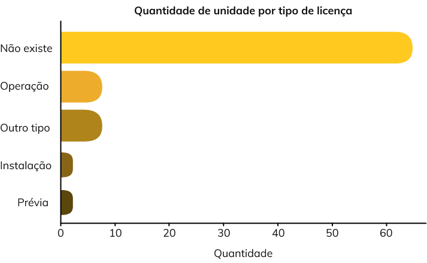
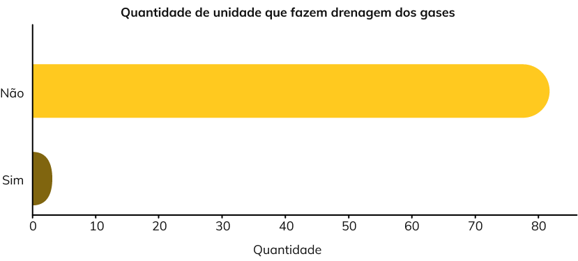
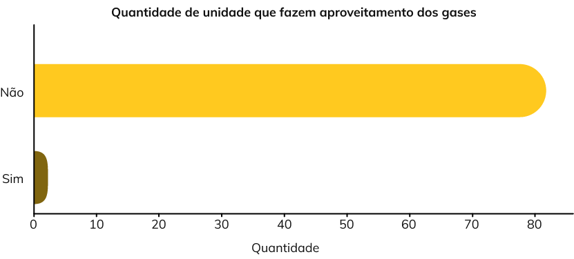

1.gif)
Saneamento básico
“No Brasil, o saneamento básico é um direito assegurado pela Constituição e definido pela Lei nº. 11.445/2007 como o conjunto dos serviços, infraestrutura e Instalações operacionais de abastecimento de água, esgotamento sanitário, limpeza urbana, drenagem urbana, manejos de resíduos sólidos e de águas pluviais.”
Trata Brasil
O que são os resíduos sólidos?
Resíduo sólido é todo material, substância, objeto ou bem descartado resultante de atividades humanas em sociedade.
A maior parte pode ser reaproveitada ou reciclada quando coletada e manejada de forma adequada. O material sem possibilidade de reaproveitamento (rejeito) deve ser disposto em locais ambientalmente adequados.
Quem fornece as informações?
O responsável pela formulação de políticas públicas, coleta de informações e planos de saneamento básico é o Sistema Nacional de Informações sobre Saneamento (SNIS), em conjunto com a Secretaria Nacional de Saneamento e do Ministério do Desenvolvimento Regional.

O que fazem?
O Diagnóstico do Manejo de Resíduos Sólidos Urbanos reunem informações de órgãos gestores dos serviços públicos de 3.712 municípios (66,6% dos 5.570 do país), entre eles 26 capitais e o Distrito Federal. A amostra abrange 173,8 milhões de habitantes, o que corresponde a 82,7% da população total e 86,6% da população urbana (154,2 milhões de habitantes) do Brasil em 2019.
Coleta seletiva?
Recolhimento diferenciado de resíduos sólidos secos (papel, plástico, metal, vidro e outros).
O que fazem?
O Diagnóstico do Manejo de Resíduos Sólidos Urbanos reunem informações de órgãos gestores dos serviços públicos de 3.712 municípios (66,6% dos 5.570 do país), entre eles 26 capitais e o Distrito Federal. A amostra abrange 173,8 milhões de habitantes, o que corresponde a 82,7% da população total e 86,6% da população urbana (154,2 milhões de habitantes) do Brasil em 2019.
Quem coleta?
Prefeitura, empresas contratada pela prefeitura, cooperativas de catadores com parceria com a prefeitura e entidades em parceria em a prefeitura.
Qual o destino?
Centrais de Triagem são locais onde os materiais recicláveis secos são separados. O material é destinado à recuperação.
Aterros Sanitários são locais de disposição final de materiais considerados não recuperáveis.
Apenas 6 municipios
De 60 que participaram da pesquisa fazem reciclagem no estado do Maranhão
Só 2.55% do lixo é reciclado
O resíduo sólido pode servir de abrigo e alimento para vetores que causam doenças
51.88% do lixo
No Maranhão ainda é depositado de maneira irregular

78.31% das unidades
Que participaram da pesquisa no Maranhão, estão sem licença ambiental
2 de um total de 83
Unidades fazem drenagem de gases no Maranhão
1 de 82 unidades
Fazem aproveitamento desses gases
Projeto
Pró-Catador
Cidadania e capacitação para trabalhadores da coleta seletiva trazendo renda familiar, elevação de escolaridade e autonomia.
O projeto visa estimular o esforço e conscientização da coleta seletiva, estimulando a prática da Política nacional de Resíduos Sólidos.
Atenuando a situação da pobreza extrema e degradação ambiental.
Uma solução que dá nova utilidade a aterros sanitários, transformando o lixo orgânico em energia limpa.
É um fator positivo para a reputação das empresas que adotam modelos sustentáveis de geração de energia.
Projeto
Biogás
Biocombustível feito a partir da transformação de materiais orgânicos, sendo utilizado como uma fonte alternativa de energia.
Como posso ajudar?
Aproveite o máximo do lixo orgânico.
Aproveite o máximo do lixo orgânico.
Tenha muito cuidado no descarte de resíduos.
Adote e ensine atitudes sustentáveis às crianças.